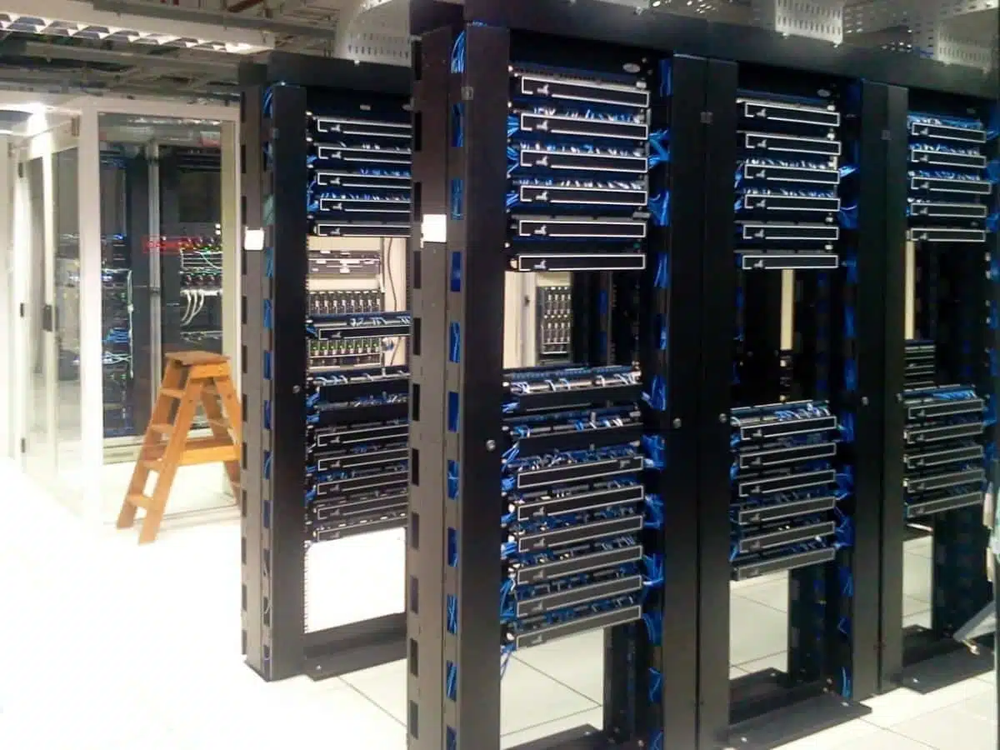
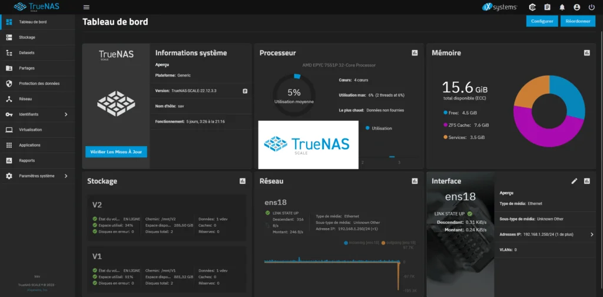
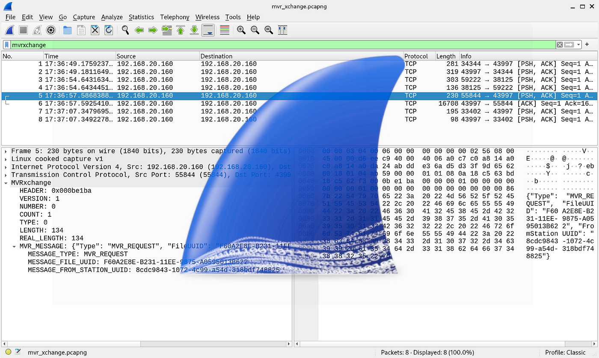
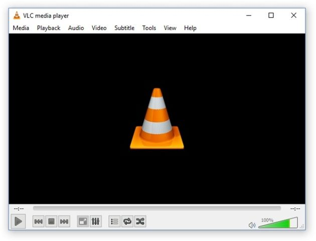
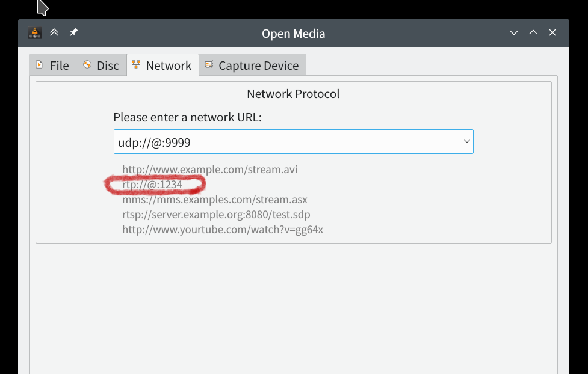

Actuellement étudiant en deuxième année de BTS Services Informatiques aux Organisations, option SISR, à l’ORT Daniel Mayer. Au cours de ma formation, j’ai pu acquérir des connaissances solides en administration systèmes, réseaux et sécurité, ainsi qu’en gestion de serveurs et en virtualisation. Ces apprentissages me permettent de mieux comprendre le fonctionnement des infrastructures informatiques et de développer des compétences pratiques.
et curieux des nouvelles technologies, je cherche constamment à approfondir mes connaissances et à relever de nouveaux défis techniques. Mon objectif est de continuer à progresser dans ce domaine et de construire progressivement un parcours professionnel dans l’administration systèmes et réseaux.
Projet sur lequel j'ai travaillé.
Dans le cadre de mon BTS SIO option SISR, je travaille actuellement sur la mise en place d’une solution de gestion de parc informatique sous Debian. J’ai réussi à installer et configurer GLPI, ce qui m’a permis de disposer d’une base fonctionnelle pour la gestion des actifs. J’ai ensuite entrepris l’installation d’OCS Inventory afin d’automatiser la remontée des informations matérielles et logicielles des postes clients. Cependant, j’ai rencontré un problème de compatibilité de version entre OCS et GLPI, ce qui a empêché l’intégration complète des deux outils.
Pour remédier à cette difficulté, je prévois de vérifier précisément la version de GLPI installée et d’identifier, dans la documentation officielle, la version d’OCS Inventory compatible. Ensuite, je pourrai soit mettre à jour GLPI, soit installer une version adaptée d’OCS Inventory afin d’assurer une parfaite compatibilité. Cette démarche me permet de développer mes compétences en administration système sous Debian, en déploiement d’applications web et surtout en résolution de problèmes techniques liés aux versions logicielles.
J’ai effectué un stage de six semaines chez Visionetics, entreprise spécialisée dans le réseaux et le multimédia. Durant ce stage, j’ai installé et configuré TrueNAS sur des serveurs, utilisé Wireshark pour analyser le trafic réseau et VLC pour manipuler des flux multimédias. J’ai également accompagné mon maître de stage dans des salles de serveurs pour découvrir l’organisation physique des infrastructures. Ce stage m’a permis de développer mes compétences en administration système et réseau, de découvrir des outils professionnels et de mieux comprendre le fonctionnement concret d’une infrastructure informatique.
     Mail : tristan.momha@outlook.fr
Numero de téléphone : 07 68 11 08 10
Adresse : 12 Rue des Tilleuls Appartement 4B 75012 Paris, France